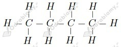
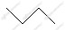

Spośród wymienionych związkami organicznymi nie są:
Zdaniami prawdziwymi są:
a) Węgiel w związkach organicznych jest zawsze czterowartościowy.
d) Wzór rzeczywisty może być wielokrotnością wzoru empirycznego.
wyjaśnienie zdań fałszywych:
b) obecnie znanych jest sześć odmian alotropowych węgla
c) w skład związków organicznych wchodzić mogą również inne pierwiastki, np. tlen
Pierwiastki posiadające odmiany alotropowe:
a) diament - zastosowanie jako materiał ścierny, w wiertłach, lub narzędziach tnących.
b) grafit - zastosowanie w ołówkach
c) diament - zastosowanie w jubilerstwie
d) grafit - zastosowanie w ogniwach
a) grafit
b) diament
c) grafen
wzór strukturalny:

wzór półstrukturalny:
wzór grupowy:
wzór szkieletowy:

Zawartość procentowa węgla w C4H8:
Zawartość procentowa węgla w C6H10:
Odpowiedź: Większą zawartość procentową węgla w cząsteczce posiada węglowodór C6H10.
a) C4H10:
b) C4H8:
c) C4H6:
Wzór tego węglowodoru możemy zapisać ogólnie jako CxHy.
Masa molowa węgla to 12 g/mol zaś wodoru to 1 g/mol, zatem masa węgla w cząsteczce węglowodoru wynosi 12x zaś wodoru y. Jeśli węgiel stanowi 82,76% węglowodoru to wodór 17,24%.
Liczymy stosunek molowy węgla do wodoru w cząsteczce węglowodoru:
Wzór empiryczny tego węglowodoru to
Ogólnie wzór tego związku możemy zapisać jako CxHy.
Zaczynamy od obliczenia masy węgla w tym związku:
Wiedząc, że masa molowa węgla wynosi 12 g/mol liczymy ilość moli atomów węgla w jednym molu cząsteczek związku:
Liczymy masę wodoru w związku:
Wiedząc, że masa molowa wodoru wynosi 1 g/mol liczymy ilość moli atomów wodoru w jednym molu cząsteczek związku:
Odpowiedź: Wzór rzeczywisty tego związku to C2H4.